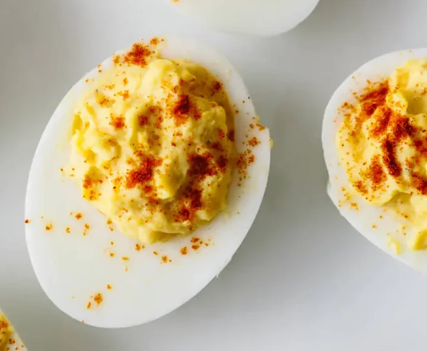

Deviled Eggs

Deviled eggs with paprika.
Ingredients
- 6 Large Eggs
- 3 Tbsp. Mayonnaise
- 1 tsp. Dijon Mustard
- 1 tsp. Apple Cider Vinegar
- Salt and Pepper, to taste
- Paprika, for garnish
Steps
- Hard boil eggs, then peel and slice in half lengthwise.
- Spoon the egg yolks into a separate bowl.
- Mash the yolks and add the mayonnaise, mustard, vinegar, salt and pepper. Stir until smooth.
- Use the spoon to add a portion of the deviled egg mixture back into each egg white half.
- Sprinkle paprika for garnish